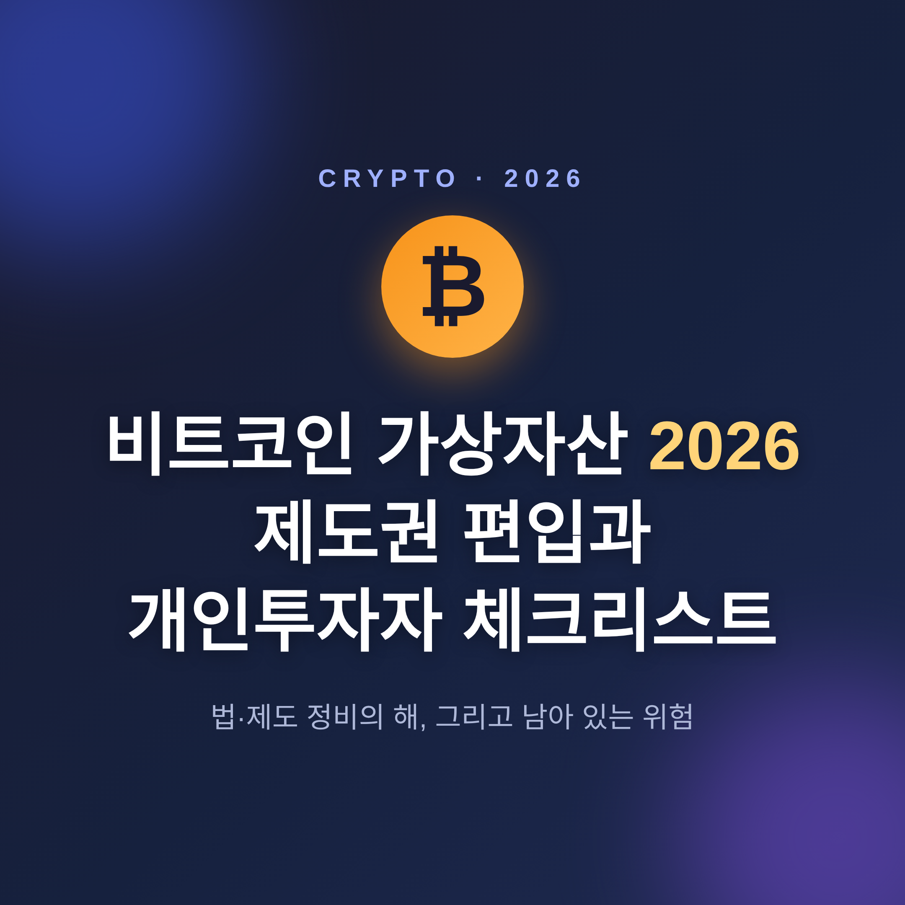
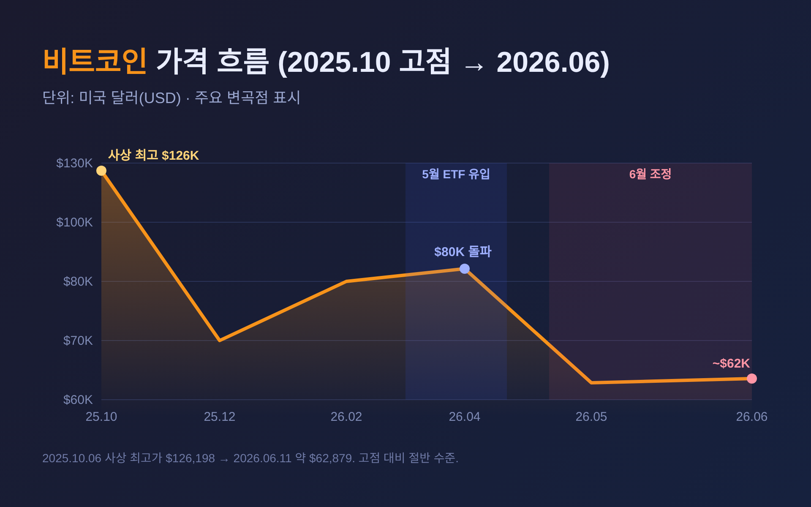
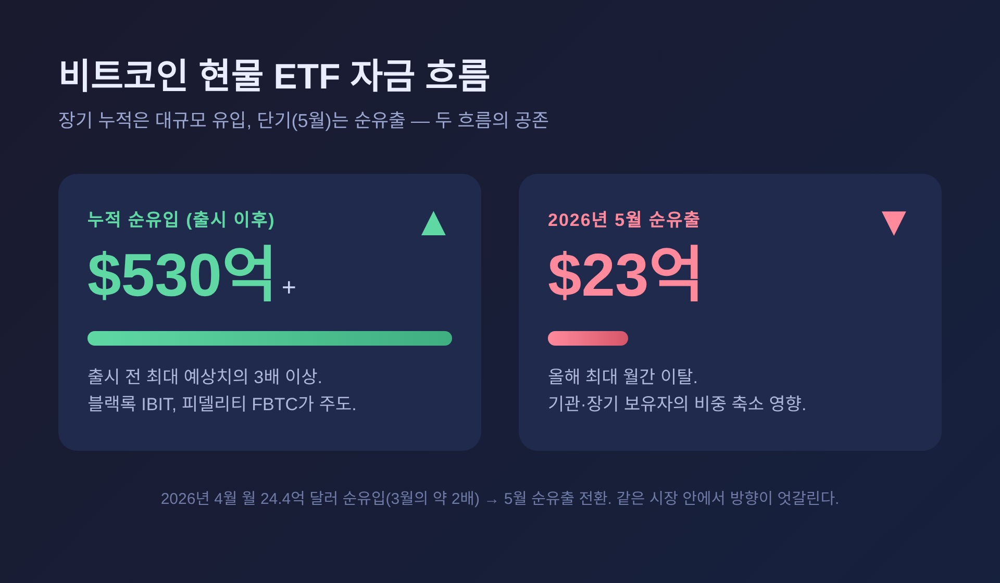
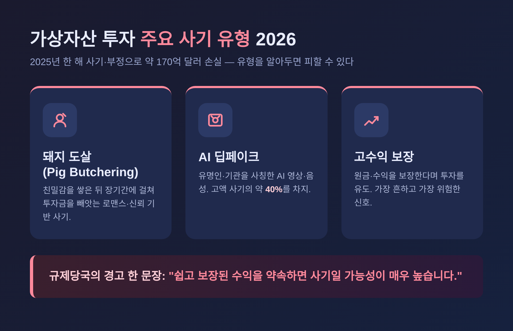

이번 글에서는 2026년 비트코인과 가상자산이 제도권으로 들어오는 흐름, 그리고 개인투자자가 알아두면 좋을 점들을 정리해 보겠습니다.
먼저 결론부터 짧게 말씀드립니다. 2026년은 미국과 한국 모두에서 가상자산 관련 법·제도가 빠르게 정비되는 해입니다. 다만 가격은 여전히 변동성이 크고, 제도 정비는 "진행 중"이지 완성된 상태가 아닙니다. 이 글은 투자 권유가 아니며, 특정 매수나 매도를 권하지 않습니다.

먼저 가격부터 살펴봅니다. 2026년 6월 11일 비트코인은 약 6만 2,879달러에 거래되었습니다. 하루 전인 6월 10일에는 약 6만 1,531달러였습니다.
흐름을 거슬러 보면 변화가 또렷합니다. 비트코인은 2025년 10월 6일 약 12만 6,198달러로 사상 최고가를 찍었습니다. 지금 가격은 그 직전 고점보다 절반가량 낮은 수준인 셈입니다.
올해 안에서도 출렁임은 컸습니다. 4월 초에는 한때 7만 달러를 터치했고, 5월에는 ETF 자금이 몰리며 8만 달러 위에서 거래되기도 했습니다. 그러나 6월 들어 기관과 장기 보유자가 비중을 줄이면서 하방 압력이 커졌습니다. 6월 6일에는 6만 달러 선이 무너졌고, 하루 약 840억 달러 규모의 시가총액이 사라졌다는 보도가 나왔습니다.
한 가지는 분명히 짚고 가겠습니다. 가상자산은 전통 자산보다 변동성이 현저히 큰 자산군입니다. 가격이 예측하기 어렵게 급등락하며, 투자금 전액을 잃을 위험도 있습니다.

제도권 편입의 큰 축은 미국에서 먼저 움직였습니다. 두 개의 법을 나눠 보겠습니다.
먼저 스테이블코인을 다루는 GENIUS Act입니다. 이 법은 2025년 7월 18일 트럼프 대통령의 서명으로 이미 법제화되었습니다. 핵심은 스테이블코인을 미 달러나 저위험 자산으로 1대 1 완전 준비금으로 뒷받침하도록 의무화한 것입니다. 발행자에게 준비금·감사·재무건전성 요건을 부과하는 연방 규제 틀이라고 이해하시면 됩니다. 규제당국은 2026년 7월까지 최종 시행규칙을 마련하는 것을 목표로 하고 있습니다.
다음은 시장 구조를 정리하는 CLARITY Act입니다. 정식 명칭은 디지털자산 시장구조법(H.R.3633)입니다. SEC와 CFTC 사이의 오래된 관할권 다툼을 정리하는 것이 이 법의 핵심입니다. 자산을 세 갈래로 나누는데, 정리하면 이렇습니다.
| 분류 | 예시 | 담당 규제기관 |
|---|---|---|
| 디지털 상품 | 비트코인, 이더리움 등 | CFTC |
| 투자계약자산 | 중앙팀 자금조달용 토큰 | SEC |
| 결제용 스테이블코인 | 달러 연동 코인 등 | 은행 규제당국 |
다만 여기서 신중하게 봐야 할 부분이 있습니다. CLARITY Act는 2026년 6월 현재 아직 통과되지 않았습니다. 2026년 5월 14일 상원 은행위원회를 15대 9로 통과했고, 하원은 이미 통과한 상태입니다. 6월 1일에는 상원 본회의 일정에 등재되어 표결을 기다리고 있습니다. 백악관은 7월 4일 통과를 목표로 한다고 알려져 있습니다. 즉 "통과됐다"가 아니라 "통과 절차가 진행 중"이라고 보는 편이 정확합니다.
2026년의 또 다른 키워드는 기관 채택입니다. 다만 흐름이 한 방향만은 아니라는 점이 중요합니다.
좋은 신호부터 보겠습니다. 미국 현물 비트코인 ETF는 출시 이후 누적 530억 달러 이상이 유입됐습니다. 출시 전 애널리스트들이 제시한 최대 예상치의 세 배를 넘는 규모입니다. 2026년 4월에는 월 24억 4,000만 달러 순유입을 기록하며 3월의 거의 두 배로 늘었습니다. 블랙록의 IBIT, 피델리티의 FBTC가 유입의 대부분을 이끌었습니다.
기업의 곳간에도 비트코인이 쌓였습니다. 2026년 1분기에만 기업 트레저리가 약 6만 2,000 BTC를 추가했습니다. MicroStrategy는 보유량을 45만 BTC까지 늘렸습니다.
그러나 아쉬운 장면도 같은 해에 함께 있었습니다. 2026년 5월에는 현물 비트코인 ETF에서 약 23억 달러가 순유출되며 올해 최대 월간 이탈을 기록했습니다. 장기 누적으로는 대규모 유입, 5~6월 단기로는 이탈 국면. 같은 시장 안에서 두 흐름이 공존하고 있는 셈입니다.

이제 국내 상황입니다. 한국도 여러 갈래에서 제도를 정비하고 있지만, 아직 갈 길이 남아 있습니다.
과세부터 보겠습니다. 가상자산 투자소득 과세는 시행 시점이 2027년 1월 1일로 2년 유예됐습니다. 기타소득으로 분류해 250만 원을 공제하고 22% 세율을 적용하는 방식이 거론됩니다.
다만 과세는 2027년이라 해도, 정보 수집은 더 빨리 시작됩니다. CARF, 즉 암호화자산 자동정보교환체계에 따라 2026년 1월 1일부터 국내 가상자산사업자는 고객의 해외 납세의무 관련 정보를 의무적으로 수집해야 합니다. 정보 제공을 거부하면 거래가 제한될 수 있습니다.
법 제도도 단계적으로 진행 중입니다. 이용자 보호에 초점을 둔 1단계법은 이미 시행되고 있습니다. 시장 인프라까지 규율하는 2단계법(디지털자산기본법)은 2026년 내 통과가 예상됩니다. 스테이블코인 입법도 미국과 홍콩의 영향으로 정부가 완료를 약속한 상태입니다.
국내 투자자들이 자주 묻는 현물 ETF는 어떨까요. 미국과 홍콩이 승인했음에도, 한국 금융당국은 여전히 신중한 입장입니다. 가상자산이 자본시장법상 기초자산에 해당하는지 불명확하다는 이유로, 해외 현물 ETF 투자까지 제한하고 있습니다. 도입에는 법령 개정과 수탁 인프라 구축 같은 정비가 먼저 필요합니다. 법인의 시장 참여 역시 2026년이 본격화의 첫 해가 될 것으로 전망됩니다.
정리하자면, 한국은 "준비 중"이라는 표현이 가장 정확합니다.
제도가 정비된다고 위험이 사라지는 것은 아닙니다. 오히려 이 대목을 가장 차분히 읽으셨으면 합니다.
첫째, 변동성과 전액 손실 위험입니다. 앞서 본 것처럼 가격은 극심하게 등락합니다. 매매·대출 플랫폼은 전통 금융 같은 투자자 보호장치가 부족할 수 있습니다.
둘째, 사기 규모가 작지 않습니다. 2025년 한 해 가상자산 사기·부정으로 약 170억 달러가 손실됐다는 집계가 있습니다. 2026년 들어서는 고수익을 보장한다는 투자사기와 이른바 "돼지 도살" 수법이 특히 흔합니다. AI 기반 딥페이크 사기가 고액 사기의 약 40%를 차지한다는 점도 눈여겨볼 만합니다.
규제당국의 경고는 한 문장으로 압축됩니다. "쉽고 보장된 수익을 약속하면 사기일 가능성이 매우 높습니다."

끝으로 한 가지만 더 짚겠습니다. 2026년의 풍경은 분명 예전과 다릅니다. 예전엔 가상자산이 제도 바깥의 영역처럼 여겨졌습니다. 지금은 미국과 한국 모두에서 법과 규제가 빠르게 자리를 잡아가고 있습니다.
그러나 제도화가 곧 안전을 보장하지는 않습니다. 가격은 여전히 출렁이고, 국내 제도는 아직 다듬어지는 중입니다.
제도는 빠르게 들어오고 있지만, 위험은 그대로 남아 있습니다.
그러니 무엇을 사고 팔지 결정하기 전에, 먼저 자신이 감당할 수 있는 범위부터 헤아려 보시길 권합니다.